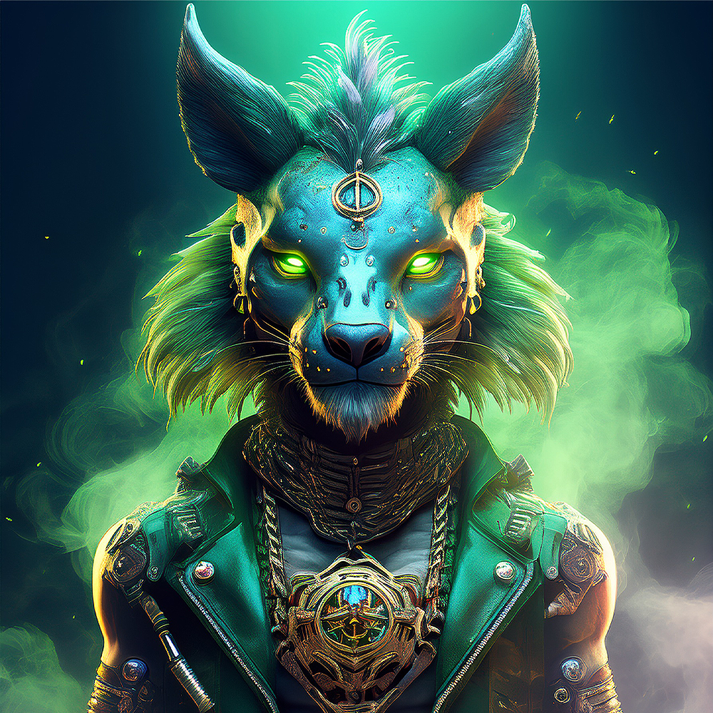
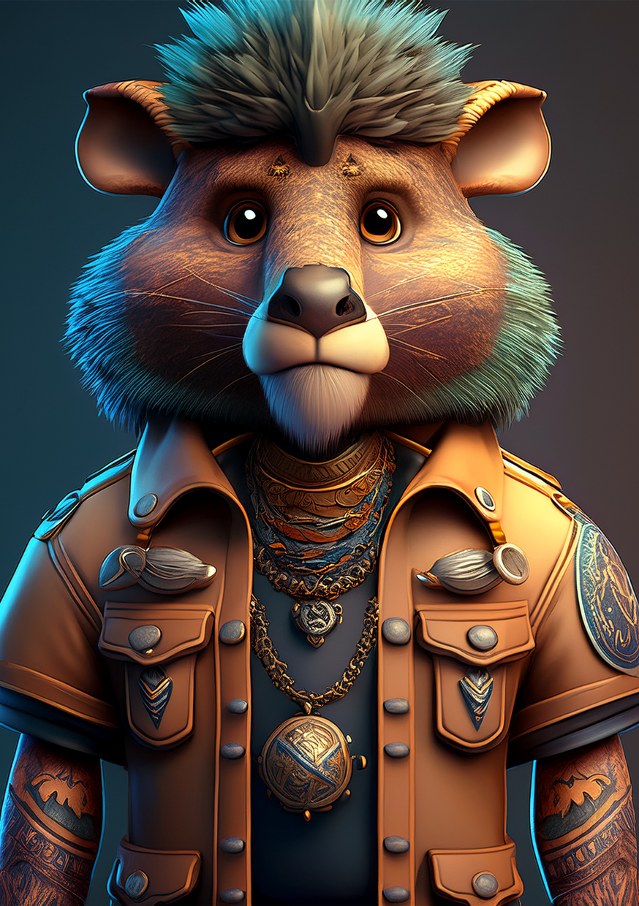

Evolution I
Genesis · The First


Genesis · Evolution IThe orphan of an ancient bloodline, at the dawn of the realm, before legend hardened his face.
The First True King
Ash
⬦ Founder of the Realm · Father of the Three
Born an orphan of an ancient bloodline, Ash rose to become the first true King of Nyfurion — choosing to protect rather than to rule. He united the kingdom and sealed its relics away from darkness.
When a slow illness sentenced him to death, he was forced to name a single heir among his three children. The choice, made full of doubt, would shatter his family and ignite the war that still burns.
"Power without love is only destruction. I choose to protect, not to rule."